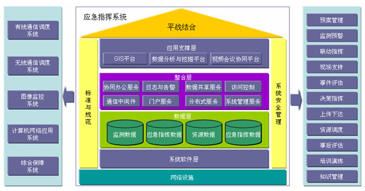
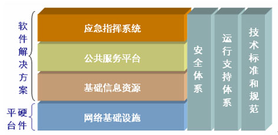
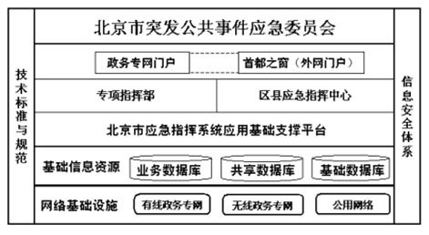
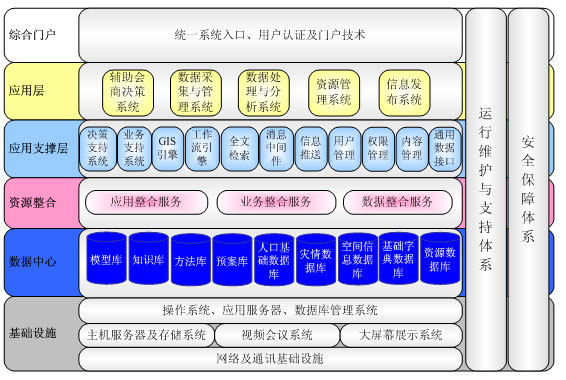
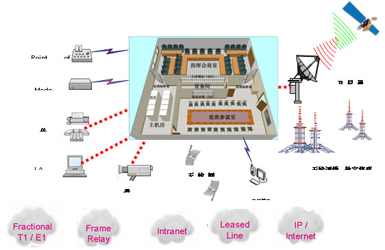
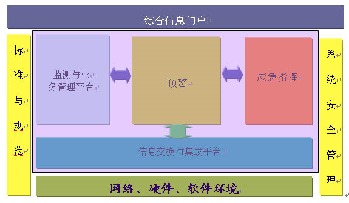
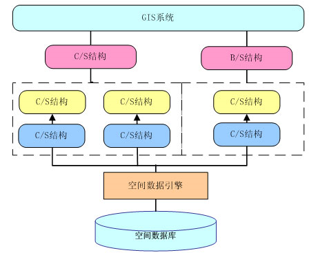

中科软应急指挥系统解决方案是一个充分利用现代网络技术、计算机技术和多媒体技术，以资源数据库、方法库和知识库为基础，以地理信息系统、数据分析系统、信息表示系统为手段，实现对突发事件数据的收集、分析、对应急指挥的辅助决策、对应急资源的组织、协调和管理控制等指挥功能。该系统在面对突发事件时，能够为指挥首长和参与指挥的业务人员和专家，提供各种通讯和信息服务，提供决策依据和分析手段以及指挥命令实施部署和监督方法，能及时、有效地调集各种资源，实施灾情控制和医疗救治工作，减轻突发事件对居民健康和生命安全造成威胁，用最有效的控制手段和小的资源投入，将损失控制在最小范围内。

方案实现目标
方案特色
应急决策指挥系统涉及领域广，技术层次深，系统的构架也是比较复杂，总体来讲，其框架图如下：

根据北京市《应急指挥系统信息化技术支撑体系》，北京市的应急系统能够体系结构细化为下图：

中科软依据据北京市的总体框架，结合中科软多年应急系统的经验，进一步细化应用框架到可实施框架，从下向上依次是基础设施层、数据中心层、资源整合层、应用支撑层、应用层、综合门户，并有安全保障体系和运行维护与支持体系保障系统的正常运行。如下图所示：

整个系统的底层是信息系统的基础设施，这包括网络及通讯设施、主机服务器及存储系统、视频会议系统、大屏幕数据演示系统，以及操作系统、数据库管理系统及网络通讯基础设施等，这些是系统最基本的运行基础。
数据是整个系统的基础，基础数据经过采集、处理、标准化、传输、存储，形成系统资源库，为系统提供了高效的业务分析、决策、交换、共享的数据环境。主要包括以下数据库： - 模型数据库 - 知识数据库 - 方法数据库 - 预案数据库 - 人口基础数据库 - 灾情数据库 - 地理信息空间数据库 - 基础字典数据库 - 资源数据库
应急指挥需要多部门、多系统联动配合，如果彼此孤立，不能实现信息共享，就会形成的“信息孤岛”。造成缺乏可比数据、缺乏分析、缺乏管理。难以获得全面的业务信息，就会影响业务和决策的效率和准确性。通过提供应用整合服务、业务整合服务、数据整合服务连接相关职能部门的系统、业务、数据，最大程度的解决信息孤岛，最大限度地利用现有的数据资源。
应用支撑层的设计直接影响系统的稳定性、安全性及可靠性等重要因素，中科软凭借多年的软件开发经验，采用低耦合，高内聚的设计思想，基于开放的标准在该层部署应用部件，为系统高效、可靠的运行提供保障。包括： - 决策支持系统 - 业务支持系统 - GIS引擎 - 工作流引擎 - 全文检索 - 消息中间件 - 信息推送 - 内容管理 - 用户管理 - 权限管理 - 通用数据接口
中科软应急决策系统根据突发事件应急的特点，综合各种数据信息及处理软件，缺省提供了辅助会商决策系统、数据收集与管理系统、信息处理与分析系统、资源管理系统、信息发布系统等应用系统，并可根据需要，快速的扩展业务系统。
综合门户系统建立了一个灵活、规范的信息组织管理平台和全网范围的网络协作环境，实现集成的信息采集、内容管理、信息搜索，能够直接组织各类共享信息和内部业务基础信息，面向不同使用对象，通过门户技术实现个性化服务，从而实现初步的信息整合；门户不同的用户提供个性化、服务，实现用户的统一认证、统一管理，提供实时信息访问及多系统协同工作。
应急基础平台是基于先进信息技术、网络技术、GIS技术、通信技术和应急信息资源基础上的，充分利用现有资源，依托政府系统电子政务建设，建立统一应急指挥网络平台，实现紧急事件报警的统一接入与交换。
根据突发公共事件突发性、区域性、持续性等特点，以及应急组织指挥机构及其职责、工作流程、应急响应、处置步骤、处置方案等应急业务的集成，应急指挥系统基础平台建设主要包括以下几个方面。 1. 音视频系统； 2. 会议系统； 3. 通信系统； 4. 后勤保障系统

音视频系统贯穿在整个应急指挥中心的日常工作、应急受理、指挥调度、管理系统等等各种活动中，是应急指挥系统最有效的信息获取、协调指挥的手段之一；是应急指挥系统与指挥人员人机交互的最主要的表现形式。包括但不限于下列子系统： - 音视频整合系统（将各种不同格式的音像信号整合后接入指挥中心） - 大屏幕显示系统 - 远程视频监控 - 视频点播系统 - 综合指挥席
会议系统是应急指挥系统对于突发公共事件进行协调处理、信息分析、决策以及指令下达的重要工具，实现各级指挥部门直接交流，成为应急指挥系统最有效的信息获取，协调指挥的手段之一。包括但不限于下列子系统： - 数字会议系统 - 电话会议系统 - 视频会议系统
通信系统是完成日常应急值守和确保各类突发公共事件处置的重要技术保障平台，是应急指挥系统协调指挥的主要途径。应急指挥中心的通信系统即要覆盖多个下级专项指挥部，同时又要保障与上级应急指挥中心的通信，实现在紧急状况下调度指挥和协调管理。包括但不限于下列子系统： - 有线通信系统 - 无线通信系统
后勤保障系统的作用是确保应急指挥平台各种设备的可靠运行，确保各种应急数据的传输、存储及灾备，并为指挥中心内部人员提供安全和舒适的工作环境。包括但不限于下列子系统： - 机房建设（包括机房装修、配电、空调等） - 综合布线系统 - 计算机网络系统 - 数据存储系统 - 异地灾备系统 - 音、视频存储系统 - 中央控制系统 - 安防系统（含监控和门禁系统） - 不间断电源系统

突发公共事件的发生具有分散性、隐蔽性、积聚性和突发性的特点，因此根据这些特点建立了事件监测的机制，能从日常管理的系统数据中、日常管理作业流程中、各种监测数据及其他相关的应用系统通过数据的抽取发现突发公共事件隐患的功能，并利用各种数据挖掘工具，进行突发公共事件信息的挖掘分析，做到突发事件及早发现、消灭，提前预防、及时处理。
根据坚持预防为主的原则，突发公共事件应急系统需要根据不同专业特点建立各种突发公共事件预测预警模型，日常管理系统不断为模型输入参数，一旦模型计算结果出现异常情况时，系统必须能够通过预先设定的途径进行报警，并自动通过电话、传真、Email、短信等方式提醒突发公共事件相关人员。
本系统能够根据不同专业的突发事件的管理模式及报告制度，设定该专业的突发事件的报送流程。突发公共事件一旦发生，系统必须能够自动地根据已经配置好的报送流程，根据事件等级的不同，直接报送到不同的直报机构，同时，根据不同的事件等级将信息报送或抄送不同的应急指挥中心。
突发公共事件应急指挥部根据突发公共事件等级和预案对所涉应急资源集中管理和统一调度。由于各个专业应急指挥部涉及的不同专业的应急资源具有不同的调度权限，应急资源的调度指令的下达根据调度权限逐级下达。应急资源的现场调度情况，通过系统直接反馈到应急指挥部，指挥部根据现场情况及时进行预案的调整。并且系统具备应急资源分配功能，能够设置本专业应急资源的空间分布、资源属性以及分配和调度方式。
系统能及时向系统内用户发布专业信息，提供专业应急信息的服务功能；并能及时向公众发布事件发展情况、紧急救助信息服务和善后处理工作信息。在目录集成的基础上，实现了综合信息门户与外部网站的集成，能够对访问用户进行统一管理，同时根据安全权限开放信息，提供信息查询与浏览功能。在发布方式上，支持空间信息的Web发布。
除了通过灾情数据采集模块及数据整合模块获得基础数据外，通过该功能能够对灾情信息进行补充（包括文字信息、数据信息、图片信息、录象信息、空间位置信息等），便于系统进行灾情分析，建立重建方案。
能够将各种灾情以空间信息为基础进行灾情分布分析，以地理信息系统为依托，显示各类灾情分布图。
辅助管理灾后清理工作，计算清理的工作量，专业人员，所需资源。并能调度各种灾后清理资源。
能够为不同专业的突发事件建立恢复重建的分析模型，评估模型。利用突发公共事件分析模型，系统对突发公共事件的危害进行分析，为恢复重建提供建设建议方案供选择。通过评估模型对各种重建方案作出评估，以便确定最优的恢复重建方案。
系统平时管理功能是为满足应急指挥中心在非应急状态下的日常工作需要而实现的。通过对国内外灾害事件汇总分析、预警准备、突发事件管理、综合查询、预案管理、知识库管理、方法库管理、情报管理、日常办公、外事管理等功能的执行管理，达到预测、预防突发公共事件的目的。
系统应提供仿真演习的功能，能通过仿真演习对应急队伍进行培训和演练。系统能够通过统一的综合门户系统和外网门户，建立各个专业应急教育培训栏目，为应急指挥工作人员加强专业技能培训，广大的民众提供应对突发公共事件的基础知识。通过培训教育，提高工作人员指挥分析能力，提供广大民众应对突发公共事件的应对能力。
交换与共享系统是各类应用系统业务信息统一的数据交换和信息共享的平台，是多个应用系统实现信息整和的重要手段。数据交换系统采用多种模式与现有的系统有机集成，是信息系统统一中最为基础的部分，其建设目标是： - 提供一个标准的、可靠的数据交换系统，为各个应用系统提供数据交换的公共模块； - 简化、规范各个应用系统的开发； - 统一管理数据的流量监控，数据加密压缩处理等，使网络利用更高效； - 为各个应用系统之间、异构数据库之间、不同的网络系统之间的信息提供整和的手段； - 为内部系统与外部系统提供统一的、安全的、可靠的连接手段。
GIS应用划分成基于C/S结构的应用和基于B/S结构的应用两种。前一种结构适用于实现数据的采集、入库、编辑和复杂的空间分析、专题制图等应用，主要是面向数据维护人员和专业分析人员使用的，以及为领导和专家提供辅助决策和分析之用；而后一种结构比较适合于实现简单的地图发布、空间查询等应用，主要面向的是广大的Internet用户。由于这两种结构各有优缺点，而从指挥中心的总体角度来看，两种结构的应用都是不可缺少的。系统的总体结构将是一个同时包含了C/S和B/S两种结构的混合型、综合型结构。系统结构如下：

包括但不限于下列功能： - 空间数据维护 以地理信息空间数据库和数据仓库的方式方便地统一管理地理空间数据和相应的属性数据，并能够对空间数据进行数据转载、转换、存储、更新等操作。 - GIS制图与输出 基于地理信息系统平台，以多种比例的电子地图为基础，各种比例尺空间数据库能够无缝嵌套使用。 - 图素的分专题图绘制 - 图素的分层绘制 - 图例、标注的绘制 - 栅格数据的嵌入 - 地图的硬拷贝输出 - GIS空间分析 根据空间分析作用的数据性质不同，分为：① 基于空间图形数据的分析运算；② 基于非空间属性的数据运算；③ 空间和非空间数据的联合运算。解决所涉及到地理空间的实际问题，提取和传输地理空间信息，特别是隐含信息，以辅助决策 - 空间专题分析 空间专题分析的目的是解决某类与地理空间有关的问题，涉及多种空间分析操作的组合。 - 空间专题分析的定制 - 空间专题分析的存储 - 空间专题分析的修改 - 空间专题分析的扩展 - 专题分析数据的输入 - 专题分析数据的输出 - 空间查询管理 检索某类与地理空间有关的数据。